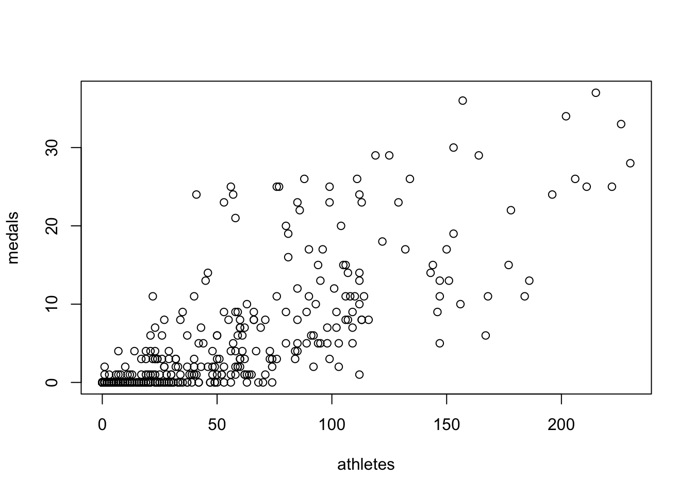
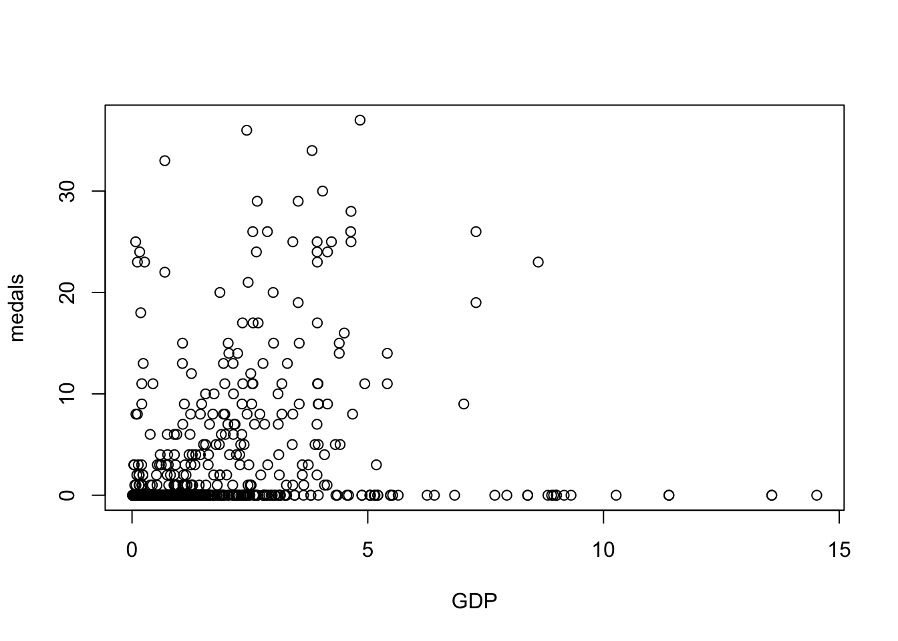
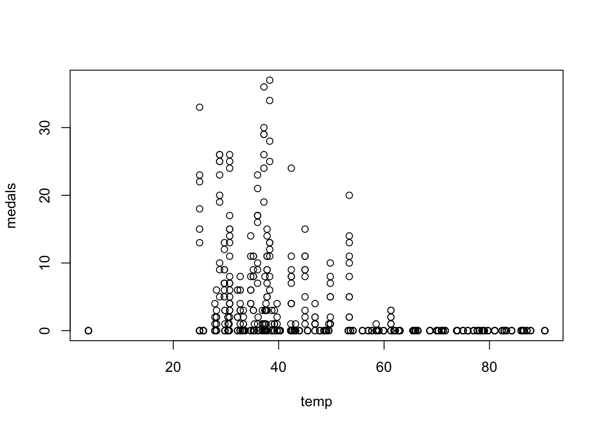
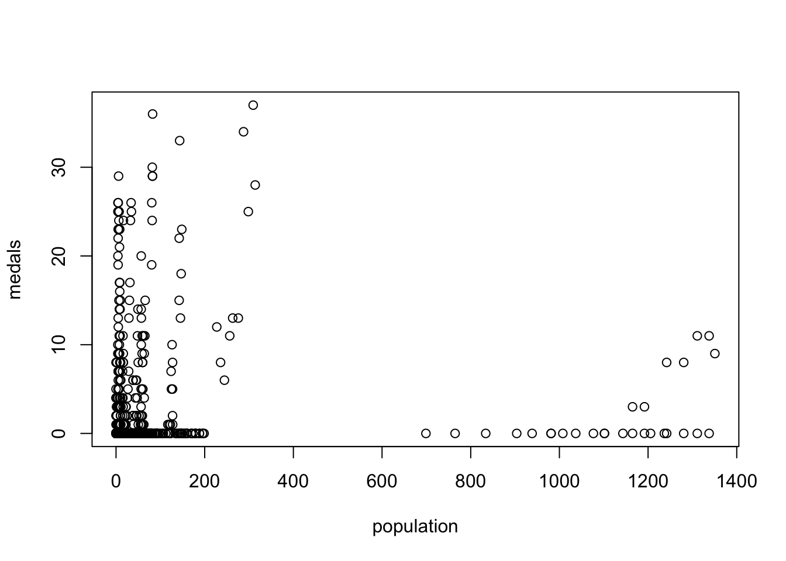

# メダル
sum(is.finite(medals))[1] 1122mean(medals, na.rm = TRUE)[1] 1.751337sd(medals, na.rm = TRUE)[1] 5.170563min(medals, na.rm = TRUE)[1] 0max(medals, na.rm = TRUE)[1] 37締切：2026年10月16日24:00
注意：この課題のデータはWebClassの「第3回R実習課題データ」から入手できる。添付資料03_Olympic_data.RDataをダウンロードした上で、授業の手順に沿ってPositCloud上にアップロードしておくこと。
このデータは1980年から2014年までの冬季オリンピックに関するデータである。これをRで分析し、ある国の冬季オリンピックにおける成功を決める要因を考察してみよう。なお、コードブックは以下の通り（教科書p.59より抜粋）。
| 変数名 | 説明 |
|---|---|
| ID | データセット内のそれぞれの国を表す固有の番号 |
| country | 国名 |
| year | 年 |
| medals | 獲得したメダルの総数 |
| athletes | 五輪競技団の選手総数 |
| GDP | 国の国内総生産（1人あたりGDP、1万米ドル単位） |
| temp | 北半球の国であれば1月の、南半球の国であれば7月の、国内最大都市の平均最高気温 |
| population | 国の人口（10万人単位） |
| host | その国がホスト国であれば1、そうでなければ0 |
問１：メダル数の記述統計として正しいものを以下から選びなさい（小数点3位以下は四捨五入）。
# メダル
sum(is.finite(medals))[1] 1122mean(medals, na.rm = TRUE)[1] 1.751337sd(medals, na.rm = TRUE)[1] 5.170563min(medals, na.rm = TRUE)[1] 0max(medals, na.rm = TRUE)[1] 37問２：選手数の記述統計として正しいものを以下から選びなさい（小数点3位以下は四捨五入）。
# 選手数
sum(is.finite(athletes))[1] 1122mean(athletes, na.rm = TRUE)[1] 18.16934sd(athletes, na.rm = TRUE)[1] 36.8805min(athletes, na.rm = TRUE)[1] 0max(athletes, na.rm = TRUE)[1] 230問３：GDPの記述統計として正しいものを以下から選びなさい（小数点3位以下は四捨五入）。
コメント：2を選んでいる人が多かったが、平均と標準偏差が取り違えられている
# GDP
sum(is.finite(GDP))[1] 966mean(GDP, na.rm = TRUE)[1] 1.169092sd(GDP, na.rm = TRUE)[1] 1.806789min(GDP, na.rm = TRUE)[1] 0.011max(GDP, na.rm = TRUE)[1] 14.523問４：メダル数と選手数の散布図を作りなさい。この散布図からわかる関係として正しいのは以下のうちどれか。
# 散布図：メダル数と選手数
plot(athletes, medals)
問５：メダル数とGDPの散布図を作りなさい。この散布図からわかる関係として正しいのは以下のうちどれか。
コメント：2を選んでいる人が圧倒的多数だったが、一番あり得ない回答である。明白な関係はなさそうである。
# 散布図：GDPと選手数
plot(GDP, medals)
問６：メダル数と気温の散布図を作りなさい。この散布図からわかる関係として正しいのは以下のうちどれか。
コメント：1と3で割れたが、1と判断した方が良い。気温が高い国でメダル数0の観測が多い（散布図右下参照）。
# 散布図：気温と選手数
plot(temp, medals)
問７：メダル数と人口の散布図を作りなさい。この散布図からわかる関係として正しいのは以下のうちどれか。
コメント：これも圧倒的多数が2を選んでいたが、あり得ない回答である。
# 散布図：人口と選手数
plot(population, medals)